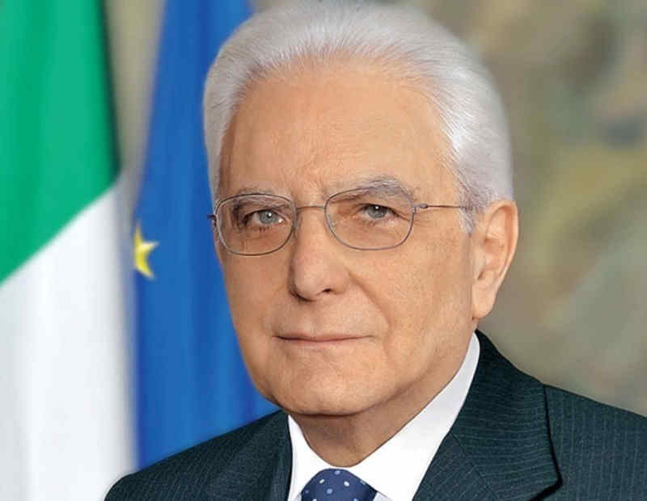

Il Presidente Sergio Mattarella ha pronunciato nei giorni scorsi un importante discorso ai diplomatici, in occasione dello scambio di auguri di fine anno con il Corpo Diplomatico.
Pace e sicurezza il Capo dello Stato ha sottolineato l'importanza di un ordine internazionale equo e sostenibile, condannando l'uso o la minaccia di armi nucleari come "un crimine contro l'umanità".
Sovranità e diritto internazionale: Ha ribadito il sostegno dell'Italia all'Ucraina, invocando una pace "equa, giusta e duratura" basata sul diritto internazionale e sulla sovranità dei popoli.
Ruolo dell'Europa: Mattarella ha riaffermato l'impegno dell'Italia a favore dell'Unione Europea e della sua vocazione geopolitica di crocevia e di mediazione tra i popoli in guerra.
- Multilateralismo e cooperazione tra le Nazioni: il presidente ha posto in risalto la necessità di rafforzare il multilateralismo e la cooperazione internazionale per affrontare sfide globali come la crisi climatica, la povertà e le disuguaglianze.
Le parole di Papa Leone per una pace disarmata e disarmante.
«La pace sia con tutti voi. Verso una pace disarmata e disarmante» è il tema del Messaggio che Papa Leone XIV ha scelto per la Giornata Mondiale della Pace, che si celebrera’ il prossimo 1° gennaio 2026.
Il Santo Padre invita tutti ad accogliere la Pace e diventarne testimoni perché essa “esiste, vuole abitarci, ha il mite potere di illuminare e allargare l’intelligenza, resiste alla violenza e la vince. La pace ha il respiro dell’eterno”.
I cristiani devono diventare testimoni, e citando S. Agostino, il Papa invita a "intrecciare un’indissolubile amicizia con la pace”. Siamo tutti invitati a camminare per questa strada tracciata dal Risorto. Lui stesso ha incarnato una pace disarmata perché "disarmata fu la sua lotta”.
La pace è un dono che va salvaguardato, infatti se “non è una realtà sperimentata e da custodire e da coltivare, l’aggressività si diffonde nella vita domestica e in quella pubblica” e si può cadere nell’inganno che per ottenerla ci si debba preparare alla guerra incarnando “l’irrazionalità di un rapporto tra popoli basato non sul diritto, sulla giustizia e sulla fiducia, ma sulla paura e sul dominio della forza”.
Il Santo Padre ricorda che "S. Agostino raccomandava di non distruggere i ponti e di non insistere col registro del rimprovero" preferendo “la via dell’ascolto e, per quanto possibile, dell’incontro con le ragioni altrui”.
Per ottenere una pace disarmante dobbiamo incarnare la mitezza perché “La bontà è disarmante. Forse per questo Dio si è fatto bambino”. Dall’umiltà evangelica nasce la pace. Un bambino nella sua fragilità ha la capacità di cambiare i cuori, mettere in discussione le nostre scelte e abbassare le armi.
Papa Leone ricorda che la pace è possibile, non è un’utopia e il dialogo ecumenico e interreligioso sono vie privilegiate per raggiungerla. Non dobbiamo inoltre dimenticare di intraprendere “la via disarmante della diplomazia, della mediazione, del diritto internazionale” che richiedono fiducia reciproca, lealtà e responsabilità negli impegni assunti.
"Questa è la pace del Cristo Risorto, una pace disarmata e una pace disarmante, umile e perseverante. Proviene da Dio, Dio che ci ama tutti incondizionatamente."
Stefano Stefanini